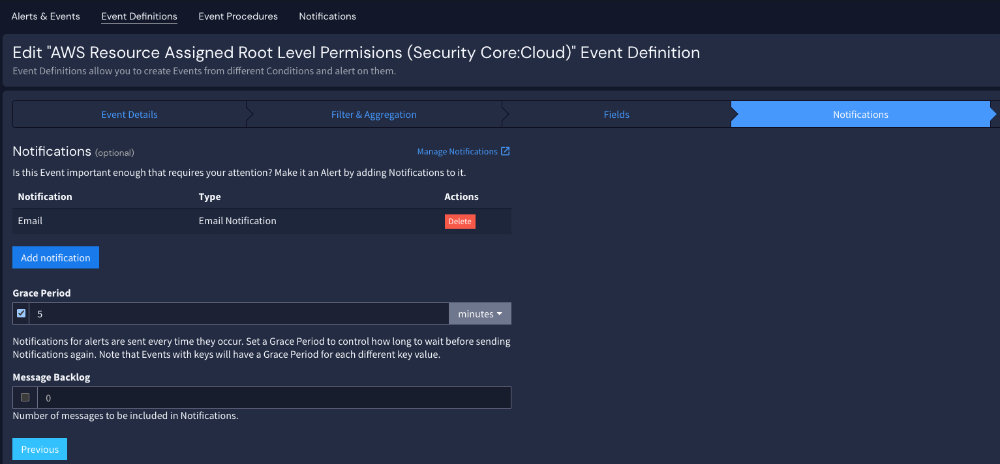

You may wish to limit the number of notifications sent for an alert; in that case, you can set a grace period when attaching a notification to an alert. The grace period determines how often a notification is sent when duplicate alerts are triggered.
